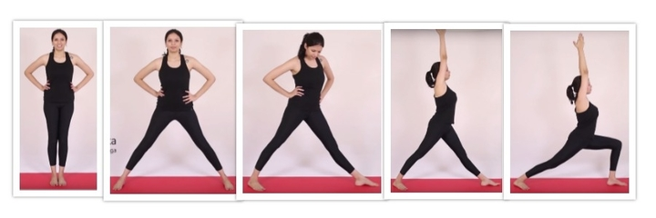

Method
- Estimate user pose via webcam feed
- Breakdown the activity(yoga asana) into stages
- Provide sequential instructions to reach nearest stage
- Calculate instruction based on checks for current stage
- When all checks are met move on to guidance to next stage

Activity (yoga asana) broken down into stages

- Pose Estimation model inference time should be within 100ms to yeild atleast 10fps and guidance to happen
- Lighter OpenPose yeilded ~2fps on our hardware for 256x256 input resolution, python model on webcam feed
- We worked on decreasing no of filters in intial, refinement stage
- Decrease refinement blocks from 5->3 in refinement stage
- Made changes to MobileNet backend
- Ran inference at 128x128 resolution, accounted for slight variations in predicted pose by using thresholds ranges at checks
- Guidance on a CPU
- Realtime guidance
- Breaking activity into keyframes
Project Slides (CS637-Computer Vision II course project):